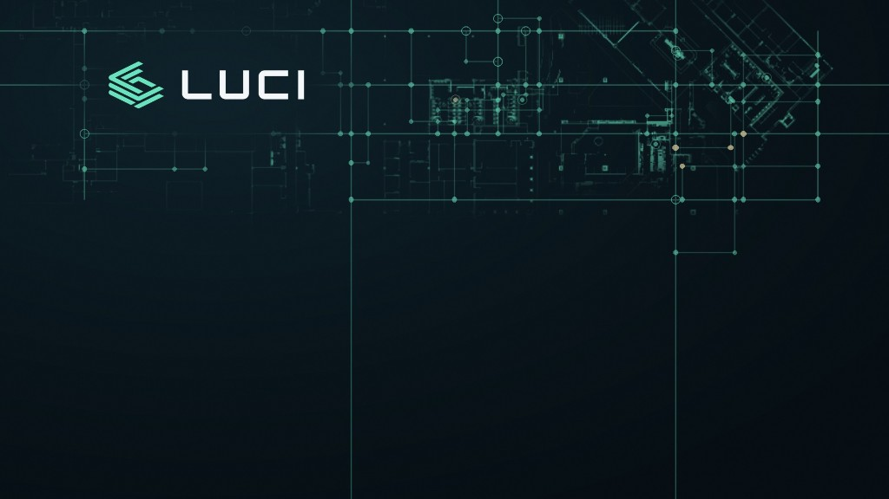

Recreation of the version you liked, with all rounded/curved corner segments removed. Every intersection is a sharp 90 degrees (miter joins, square caps — no arcs). The logo sits in a clear band between the two top lines so it has room to breathe. Dots, hollow node-rings, and the two faint background circles are kept (they were in the original). 1920 × 1080.
